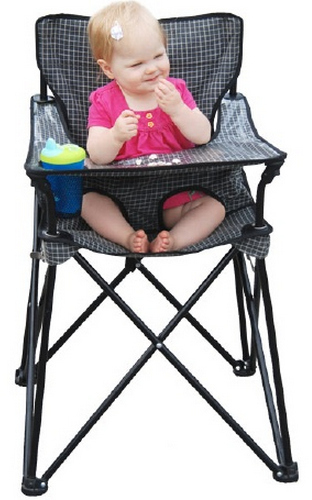

8 Life Hacks For Kids Part 3

Parenting is never an easy job; while you need to take good care of your child to make sure that s/he is happily growing up, you can’t spoil him/her. Are there any parenting hacks that make this easier? Luckily yes, here’re 28 ways to make parenting easier and more fun for both you and your kids.
1.Buy a portable high chair so that you can feed your kid everywhere easily
2.Put a basket in the bathtub when your child is bathing so that the toys won’t flow away